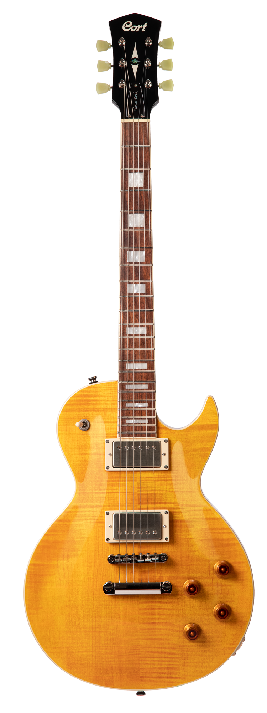

Серія CR
Електрогітари серії Classic Rock - це відомий зовнішній вигляд,
вінтажні відчуття та класичні характеристики, що настільки високо цінуються багатьма гітаристами. У
серці кожної з цих гітар – розроблені спеціально для цієї серії звукознімачі ClassicRocker.
Натисніть і утримуйте для збільшення
Cort-CR300
| Кріплення грифу: | Set-Neck |
| Корпус: | Mahogany |
| Ширина верхнього порожка: | 42㎜ (1 5/8") |
| Топ / верхня дека: | 15㎜ (19/32") Maple |
| Гриф: | Mahogany |
| Окантовка: | Red Ivory |
| Накладка грифа: | Jatoba Radius: 12" (305㎜) |
| Лади: | 22 |
| Мензура: | 24.75" (628㎜) |
| Колкова механіка: | Vintage Style |
| Брідж: | Tune-O-Matic w/ Stop Tailpiece |
| Електроніка: | 2 Volume & 2 Tone, 3 Way Toggle Switch |
| Струни: | D'Addario® EXL110 |
| Звукознімачі: | EMG® RetroActive FAT 55 Pickup Set |
| Фурнітура: | Chrome |
| Забарвлення: | Aged Vintage Burst |
Ціна: 14 685 грн

Натисніть і утримуйте для збільшення
Cort-CR250
| Кріплення грифу: | Set-Neck |
| Корпус: | Mahogany |
| Ширина верхнього порожка: | 1.65" (42㎜) |
| Топ / верхня дека: | Flamed Maple |
| Гриф: | Mahogany |
| Окантовка: | Ivory |
| Накладка грифа: | Jatoba Radius: 12" (305㎜) |
| Лади: | 22 |
| Інкрустація накладки грифа: | Rectangular White Pearl |
| Мензура: | 24.75" (628㎜) |
| Колкова механіка: | Vintage |
| Брідж: | Tune-O-Matic w/ Stop Tailpiece |
| Електроніка: | 2 Volume & 2 Tone, 3 Way switch |
| Струни: | D'Addario® EXL110 |
| Звукознімачі: | Voiced Tone VTH-59 |
| Фурнітура: | Nickel |
| Забарвлення: | Antique Amber, Dark Blue Burst, Vintage Burst, Trans Black |
| Додатково: | Graph Tech® Nubone Nut |
Ціна: 13 615 грн
Натисніть і утримуйте для збільшення
Cort-CR200
| Кріплення грифу: | Set-Neck |
| Корпус: | Mahogany |
| Ширина верхнього порожка: | 1 5/8" (42㎜) |
| Гриф: | Mahogany |
| Окантовка: | Ivory |
| Накладка грифа: | Jatoba Radius: 12" (305㎜) |
| Лади: | 22 |
| Інкрустація накладки грифа: | Rectangular White Pearl |
| Мензура: | 24.75" (628㎜) |
| Колкова механіка: | Vintage |
| Брідж: | Tune-O-Matic w/ Stop Tailpiece |
| Електроніка: | 2 Volume & 2 Tone, 3 Way switch |
| Струни: | D'Addario® EXL110 |
| Звукознімачі: | Voiced Tone VTH-59 |
| Фурнітура: | Nickel |
| Забарвлення: | Flip Blue, Black, Gold Top |
| Додатково: | Graph Tech® Nubone Nut |
Ціна: 12 540 грн
Натисніть і утримуйте для збільшення
Cort-CR100
| Кріплення грифу: | Bolt-On |
| Корпус: | Mahogany |
| Ширина верхнього порожка: | 1.65" (42㎜) |
| Гриф: | Hard Maple |
| Накладка грифа: | Jatoba Radius: 12" (305㎜) |
| Лади: | 22 |
| Інкрустація накладки грифа: | Dot |
| Мензура: | 24.75" (628㎜) |
| Колкова механіка: | Die-cast |
| Брідж: | Tune-O-Matic w/ Stop Tailpiece |
| Електроніка: | 2 Volume & 2 Tone, 3 Way switch |
| Струни: | D'Addario® EXL110 |
| Звукознімачі: | Cort® Powersound Pickup Set |
| Фурнітура: | Nickel |
| Забарвлення: | Cherry Red Sunburst, Black |
Ціна: 8 400 грн